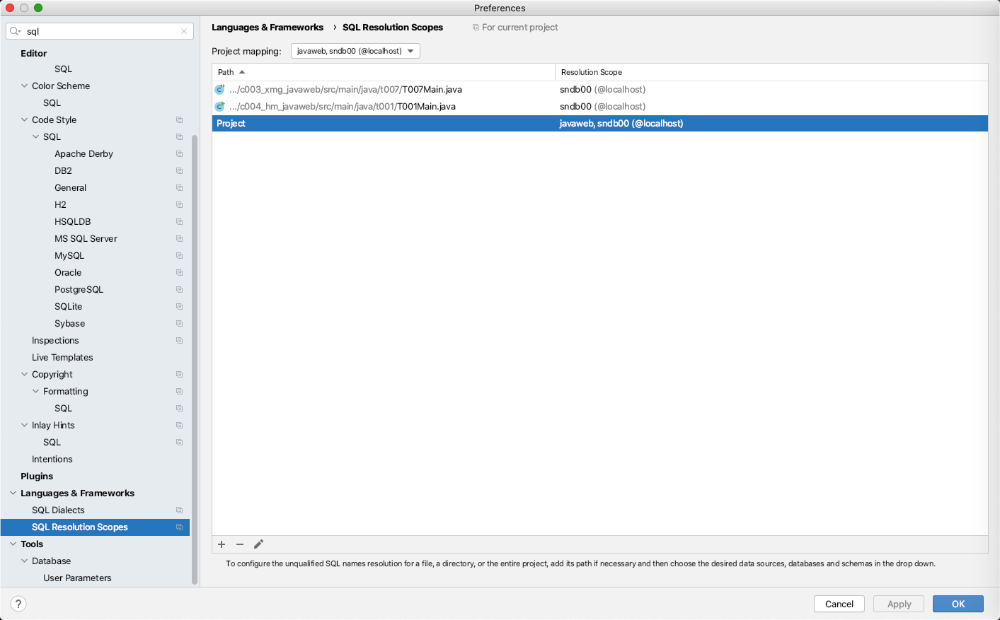
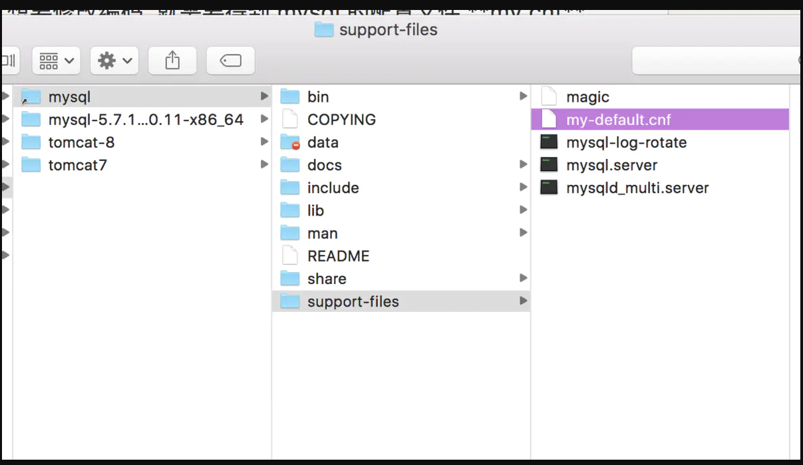
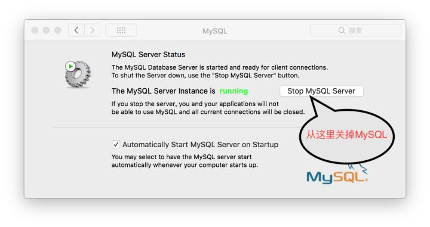

@(工作笔记)
mysql-record
[TOC]
mysql 忘记了管理员密码解决方法，修改数据库密码的几种方法
https://www.cnblogs.com/selier/p/9519911.html
MySQL允许root远程登录
GRANT ALL PRIVILEGES ON *.* TO 'root'@'%' IDENTIFIED BY 'admin' WITH GRANT OPTION; -- 设置访问权限
FLUSH PRIVILEGES; -- 刷新访问权限表
SELECT User, Password, Host FROM user;
// language=SQL

mac mysql 无法存储中文的问题解决：
方法1：
Connection connection = DriverManager.getConnection("jdbc:mysql:///jdbc?characterEncoding=utf8", "root", "admin");
方法2：
my-default.cnf
mysql --help | grep my.cnf
Default options are read from the following files in the given order: /etc/my.cnf /etc/mysql/my.cnf /usr/local/mysql/etc/my.cnf ~/.my.cnf
mysqld --help --verbose | grep my.cnf
mysqladmin --help | grep -A1 'Default options'
mysqld --help --verbose | grep my.cnf | tr " " "\n"
会有my-default.cnf ， 没有就蛋疼了
cd /usr/local/mysql/support-files/

查看配置
show variables like ’%char%‘;
Mac环境下的MySQL编码设置
在Mac或Linux上，需要编辑MySQL的配置文件，把数据库默认的编码全部改为UTF-8。MySQL的配置文件默认存放在
/etc/my.cnf或者/etc/mysql/my.cnf：
[client]
default-character-set = utf8
[mysqld]
default-storage-engine = INNODB
character-set-server = utf8
collation-server = utf8_general_ci
这样就完了。。。。。
我当时傻了，这什么玩意儿？！
最后百度，具体操作应该是这样，先找到/etc文件夹下的my.cnf文件（.cnf是后缀名）。如果没有，到/usr/local/mysql/support-files文件夹下找my-default.cnf文件，然后将其复制到/etc下。再分别在my.cnf文件中的[client]和[mysqld]标签下加上
default-character-set = utf8
和
default-storage-engine = INNODB
character-set-server = utf8
collation-server = utf8_general_ci
于是我去找这两个文件，找累死了！终于没找到。
然后百度，发现了这样一段话
官网说：从5.7.18开始不在二进制包中提供my-default.cnf文件。参考：https://dev.mysql.com/doc/refman/5.7/en/binary-installation.html
我的MySQL版本是
Server version: 5.7.21-log MySQL Community Server (GPL)
我去泥煤！！！
后来又百度（万能的百度），没有my.cnf文件自己搞一个。过程如下：
1.先从系统偏好设置里面关掉他妈的MySQL服务！！！

2.打开终端输入以下两行命令
$ cd /etc
$ sudo vim my.cnf
第一行命令不介绍了，第二行命令是创建my.cnf文件
将以下代码在vim编辑器中粘到my.cnf文件里。不会使用vim可以先在B站上学15分钟（vim学习视频）
（以下是要粘贴到my.cnf文件中的代码）
# Example MySQL config file for medium systems.
#
# This is for a system with little memory (32M - 64M) where MySQL plays
# an important part, or systems up to 128M where MySQL is used together with
# other programs (such as a web server)
#
# MySQL programs look for option files in a set of
# locations which depend on the deployment platform.
# You can copy this option file to one of those
# locations. For information about these locations, see:
# http://dev.mysql.com/doc/mysql/en/option-files.html
#
# In this file, you can use all long options that a program supports.
# If you want to know which options a program supports, run the program
# with the "--help" option.
# The following options will be passed to all MySQL clients
[client]
default-character-set=utf8
#password = your_password
port = 3306
socket = /tmp/mysql.sock
# Here follows entries for some specific programs
# The MySQL server
[mysqld]
character-set-server=utf8
init_connect='SET NAMES utf8
port = 3306
socket = /tmp/mysql.sock
skip-external-locking
key_buffer_size = 16M
max_allowed_packet = 1M
table_open_cache = 64
sort_buffer_size = 512K
net_buffer_length = 8K
read_buffer_size = 256K
read_rnd_buffer_size = 512K
myisam_sort_buffer_size = 8M
character-set-server=utf8
init_connect='SET NAMES utf8'
# Don't listen on a TCP/IP port at all. This can be a security enhancement,
# if all processes that need to connect to mysqld run on the same host.
# All interaction with mysqld must be made via Unix sockets or named pipes.
# Note that using this option without enabling named pipes on Windows
# (via the "enable-named-pipe" option) will render mysqld useless!
#
#skip-networking
# Replication Master Server (default)
# binary logging is required for replication
log-bin=mysql-bin
# binary logging format - mixed recommended
binlog_format=mixed
# required unique id between 1 and 2^32 - 1
# defaults to 1 if master-host is not set
# but will not function as a master if omitted
server-id = 1
# Replication Slave (comment out master section to use this)
#
# To configure this host as a replication slave, you can choose between
# two methods :
#
# 1) Use the CHANGE MASTER TO command (fully described in our manual) -
# the syntax is:
#
# CHANGE MASTER TO MASTER_HOST=<host>, MASTER_PORT=<port>,
# MASTER_USER=<user>, MASTER_PASSWORD=<password> ;
#
# where you replace <host>, <user>, <password> by quoted strings and
# <port> by the master's port number (3306 by default).
#
# Example:
#
# CHANGE MASTER TO MASTER_HOST='125.564.12.1', MASTER_PORT=3306,
# MASTER_USER='joe', MASTER_PASSWORD='secret';
#
# OR
#
# 2) Set the variables below. However, in case you choose this method, then
# start replication for the first time (even unsuccessfully, for example
# if you mistyped the password in master-password and the slave fails to
# connect), the slave will create a master.info file, and any later
# change in this file to the variables' values below will be ignored and
# overridden by the content of the master.info file, unless you shutdown
# the slave server, delete master.info and restart the slaver server.
# For that reason, you may want to leave the lines below untouched
# (commented) and instead use CHANGE MASTER TO (see above)
#
# required unique id between 2 and 2^32 - 1
# (and different from the master)
# defaults to 2 if master-host is set
# but will not function as a slave if omitted
#server-id = 2
#
# The replication master for this slave - required
#master-host = <hostname>
#
# The username the slave will use for authentication when connecting
# to the master - required
#master-user = <username>
#
# The password the slave will authenticate with when connecting to
# the master - required
#master-password = <password>
#
# The port the master is listening on.
# optional - defaults to 3306
#master-port = <port>
#
# binary logging - not required for slaves, but recommended
#log-bin=mysql-bin
# Uncomment the following if you are using InnoDB tables
#innodb_data_home_dir = /usr/local/mysql/data
#innodb_data_file_path = ibdata1:10M:autoextend
#innodb_log_group_home_dir = /usr/local/mysql/data
# You can set .._buffer_pool_size up to 50 - 80 %
# of RAM but beware of setting memory usage too high
#innodb_buffer_pool_size = 16M
#innodb_additional_mem_pool_size = 2M
# Set .._log_file_size to 25 % of buffer pool size
#innodb_log_file_size = 5M
#innodb_log_buffer_size = 8M
#innodb_flush_log_at_trx_commit = 1
#innodb_lock_wait_timeout = 50
[mysqldump]
quick
max_allowed_packet = 16M
[mysql]
no-auto-rehash
# Remove the next comment character if you are not familiar with SQL
#safe-updates
default-character-set=utf8
[myisamchk]
key_buffer_size = 20M
sort_buffer_size = 20M
read_buffer = 2M
write_buffer = 2M
[mysqlhotcopy]
interactive-timeout
3.粘完后保存并退出。然后就完事了。
再到打开MySQL，输入
mysql> show variables like '%char%';
结果如下：
+--------------------------+-----------------------------------------------------------+
| Variable_name | Value |
+--------------------------+-----------------------------------------------------------+
| character_set_client | utf8 |
| character_set_connection | utf8 |
| character_set_database | utf8 |
| character_set_filesystem | binary |
| character_set_results | utf8 |
| character_set_server | utf8 |
| character_set_system | utf8 |
| character_sets_dir | /usr/local/mysql-5.7.21-macos10.13-x86_64/share/charsets/ |
+--------------------------+-----------------------------------------------------------+
8 rows in set (0.00 sec)
到此就结束了。